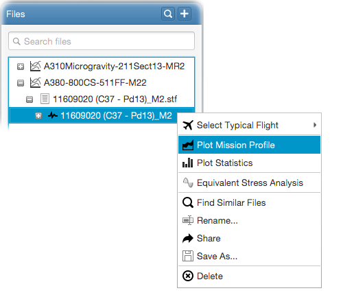

Once the stress sequence is generated from the STF file, you can plot the mission profile. For this, right click on the
stress sequence and select - Plot Mission Profile
from the popup menu as follows;

You show/hide the stress components to be plotted within the input panel. Note that, segment names will be displayed once you
zoom in to maximum 15 segments.